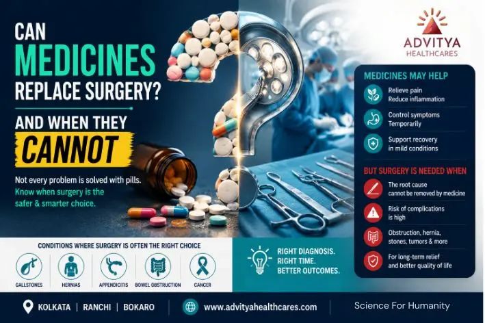
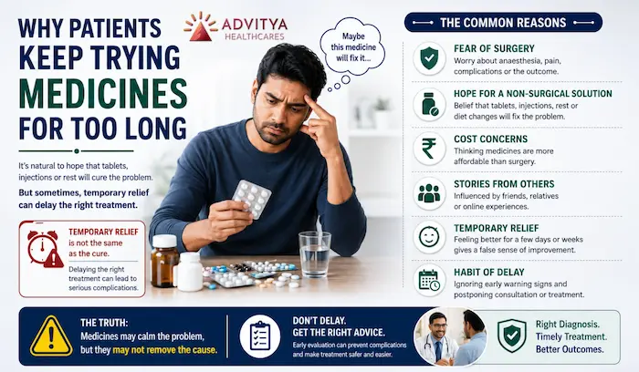
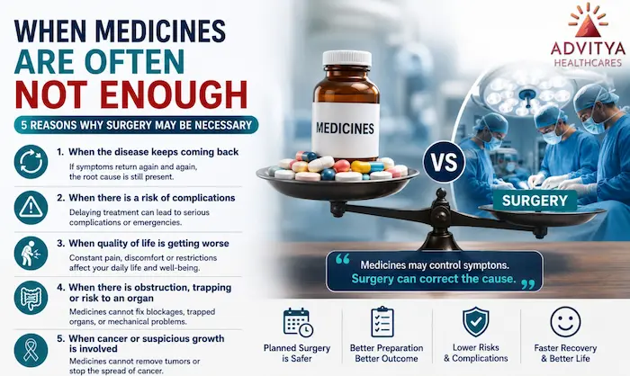
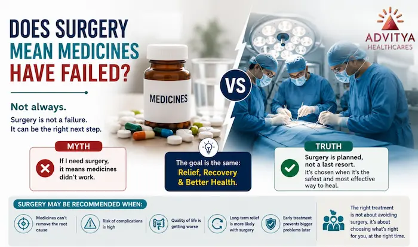
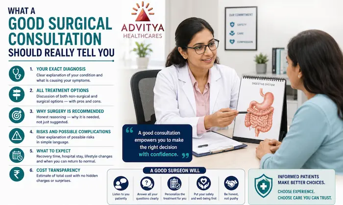

When medicines are enough, when they are not, and what a good surgical consultation should explain before you decide.
Can Medicines Replace Surgery? And When They Cannot
One of the most common questions patients ask is:
“Can I just manage this with medicines?”
It is a very natural question. Most people want to avoid surgery if possible. They hope tablets, injections, rest, diet control, or time will solve the problem. And in many cases, that hope is understandable — because medicines do help. They can reduce pain, control infection, settle inflammation, and improve symptoms.
But there is one important truth patients need to understand:
Not all diseases need medicines.Not all diseases need surgery.And mechanical problems often need mechanical solutions.
That is the real heart of the decision.
At Advitya Healthcares / PancreaCare, the goal is never to push surgery or overuse medicines. The goal is to understand the actual disease and choose the treatment that truly solves the problem.
The right treatment depends on the type of problem
Many patients think treatment has only two options:
- take medicines, or
- undergo surgery.
But in reality, treatment decisions are more thoughtful than that.
Some conditions improve very well with:
- medicines,
- lifestyle changes,
- observation,
- or supportive care.
Some conditions need:
- a planned procedure,
- a surgical correction,
- or removal of the root cause.
And some conditions need both.
That is why the real question is not:
“Can medicines replace surgery?”
The better question is:
“What kind of problem is this — and what treatment actually fixes it?”
Not all diseases need medicines
This may sound surprising, but it is true.
Some conditions are not mainly “medical” problems that tablets can fix. For example, if a patient has a structural or mechanical issue, medicines may reduce symptoms for a while, but they may not correct the defect itself.
There are also situations where medicines are given only for temporary control:
- to reduce pain,
- to calm inflammation,
- to stabilize the patient,
- or to prepare them for the next step.
So medicines are helpful — but not always curative.
- Sometimes they support treatment.
- Sometimes they delay symptoms.
- Sometimes they buy time.
- But they do not always solve the actual disease.
Not all diseases need surgery
This is equally important.
Patients often fear that once they meet a surgeon, surgery will automatically be advised. But a good surgical opinion should never work like that.
- Not every pain needs an operation.
- Not every swelling needs removal.
- Not every digestive issue needs a procedure.
Many patients can improve with:
- medicines,
- diet changes,
- observation,
- follow-up,
- and time.
If the problem is mild, reversible, non-progressive, or still safely manageable, surgery may not be necessary at all.
- That is why a responsible surgeon does not simply ask,
- “Can I operate?”
- A responsible surgeon asks,
- “Do you actually need surgery right now?”
This difference is what builds trust.
Mechanical problems often need mechanical solutions
This is one of the simplest and most powerful ways to understand why surgery becomes necessary in some cases.
If the problem is mechanical, then the solution often has to be mechanical too.
For example:
- a hernia is a weakness in the muscle wall — tablets cannot permanently close that gap
- gallstones are physical stones — medicines may reduce symptoms, but they do not always remove the stone-related problem
- appendicitis may begin with pain and inflammation, but if the appendix is badly diseased, it may need removal
- bowel obstruction is a blockage — medicines cannot always open a physically blocked passage
- certain tumours or masses may need removal because they are structurally present in the body
This is why many surgical diseases are not simply about pain. They are about anatomy, blockage, pressure, trapping, or physical damage.
And when the problem is physical, the answer may need to be physical too.
Mechanical problems often need mechanical solutions.
That does not mean every patient needs surgery immediately.
It means medicines alone may not be enough to truly correct the cause.
When medicines help — but do not replace surgery
Medicines are valuable. In many cases, they are the first step.
They may:
- reduce inflammation,
- control pain,
- treat infection,
- settle acidity,
- improve swelling,
- or make a patient more comfortable.
But there are many situations where medicines only manage the symptoms, while the main problem remains.
That is when patients feel temporary relief and assume the disease is getting better — when in fact, it may still be there underneath.
For example:
- the pain improves, but the hernia remains
- the stomach settles, but the stones remain
- the swelling reduces, but the obstruction risk remains
- the discomfort becomes less, but the tumour or mass remains
This is where many patients become confused.
They think:
“If I am feeling better, maybe I don’t need anything more.”
But feeling better and being cured are not always the same thing.
Why patients often keep trying medicines for too long

Patients do not delay for foolish reasons. They delay for human reasons.
Common reasons include:
- fear of surgery
- fear of anaesthesia
- fear of pain
- fear of scars
- worry about recovery time
- cost concerns
- stories from others
- temporary relief from medicines
That last point is especially important.
Temporary relief can create a false sense of safety. A patient may feel better for a few days or weeks and believe the problem is resolving. But if the root cause is still present, the condition may slowly worsen in the background.
This is how some patients move from a manageable condition to a more serious or emergency situation.
So when can medicines not replace surgery?

Medicines often cannot replace surgery when:
1. The disease keeps coming back
If the same pain, swelling, or attack returns repeatedly, the root problem is probably still there.
2. There is a structural or mechanical defect
If something is torn, trapped, blocked, or physically abnormal, tablets usually cannot repair it permanently.
3. The risk of complications is increasing
If delay can lead to obstruction, infection, rupture, strangulation, or worsening disease, surgery may become the safer choice.
4. Quality of life is getting worse
If a patient is living around pain, restrictions, fear, or repeated attacks, long-term symptom control may no longer be enough.
5. A suspicious growth or tumour is involved
Medicines may support treatment, but they cannot replace removal or definitive treatment when a mass needs proper surgical management.
Does surgery mean medicines have failed?

Not at all.
This is a very important mindset shift.
Surgery is not a failure.
It is not proof that medicines were “useless.”
And it is not something that automatically means the disease became worse because treatment was delayed.
In many cases, medicines were never meant to cure the structural problem permanently. They were meant to:
- control symptoms,
- stabilize the patient,
- buy time,
- reduce inflammation,
- or prepare the patient safely for the next step.
So surgery is often not the opposite of medicines.
Sometimes it is simply the next correct step.
What a good surgical consultation should really explain

A good consultation should never just say:
“You need surgery.”
It should explain clearly:
- what the actual diagnosis is
- whether medicines can help
- whether medicines can solve the disease completely
- what happens if treatment is delayed
- what the risks are
- and why surgery is or is not being advised
A patient deserves clarity, not pressure.
At PancreaCare By Advitya Healthcares , the better way to look at the question is this:
not “medicines versus surgery”
but “what is the safest and most effective treatment for this condition at this stage?”
That is how better decisions are made.
Final takeaway
When patients ask:
“Can medicines replace surgery?”
the honest answer is:
Sometimes yes. Sometimes no.
Because:
- not all diseases need medicines
- not all diseases need surgery
- mechanical problems often need mechanical solutions
The right treatment is not about choosing the easier option.
It is about choosing the option that actually matches the disease.
- Sometimes that means observation.
- Sometimes that means medicines.
- Sometimes that means surgery.
- And sometimes it means a combination of all three.
The smartest choice is not the one that avoids surgery at any cost.
It is the one that gives the patient the best chance of safety, relief, recovery, and long-term health.
Have a question this article does not answer?
Send us your reports. A specialist reviews them before you travel, so the first visit begins with a plan rather than a repeat test.